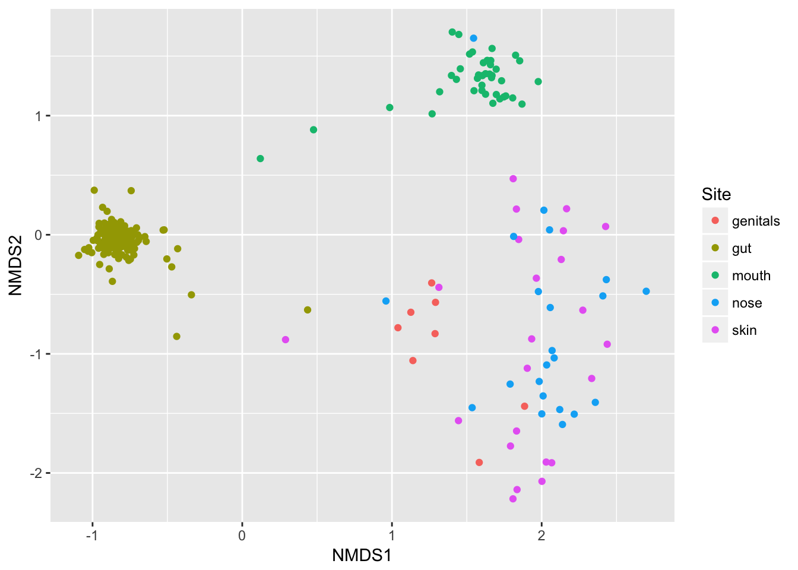

Chapter 5 Case Studies
Let’s look at some specific examples:
5.1 Father and son
My father and I live in different parts of the country: he’s in the Midwest (where I grew up) and I’m on the West Coast. We’re both healthy omnivores and, other than a couple-decade age difference we both eat roughly similar foods and have similar medical histories.
That said, I was surprised to see our gut biomes were so similar. Here’s how I did the comparison.
Remember that a gut microbiome varies a lot day-to-day, depending on whatever food we happened to eat, exposure to illness, geographic location, even time of year. To keep the variables as constant as possible, I’ll compare two samples taken on the same day:
| 74847 | 76580 | |
|---|---|---|
| Firmicutes | 53.8212 | 46.4356 |
| Bacteroidetes | 19.8016 | 37.5014 |
| Verrucomicrobia | 16.8042 | 2.4382 |
| Proteobacteria | 1.7949 | 12.4340 |
| Actinobacteria | 6.6491 | 0.9072 |
| Euryarchaeota | 4.7835 | 0.0209 |
At the highest, phylum, level, we can see the percentage abundances look different, but not terribly different. One easy way to spot specific patterns is through a heatmap, like this one:

5.2 Case study: a baby microbiome
Molly is a healthy infant whose first-time parents are interested in the microbiome and have tried to do everything they can to optimize their baby’s microbial health. Molly was born vaginally, has never had antibiotics, is exclusively breast-fed by a mother who tries to eat nutritious, organic food. They live in the country, surrounded by nature, including pets and other animals that will become more of her life when she starts to move around.
But how can you tell whether their healthy lifestyle is helping? To find out, her parents gave Molly an $89 uBiome gut kit for her one-month birthday. As any parent on diaper duty knows, collecting the, um, sample is pretty easy. They mailed a tiny swab to the lab and a few weeks later they received this list of the kinds of bacteria found along with a breakdown of their percentage abundances:
| Phylum (Baby) | |
|---|---|
| Bacteroidetes | 84.59% |
| Actinobacteria | 9.18% |
| Proteobacteria | 3.97% |
| Firmicutes | 2.26% |

What does this all mean? Well, the first thing to notice about Molly’s microbiome is the dominance of a group of bacteria called Bacteroidetes, and the much lower levels of another type called Firmicutes. In most westerners, the abundance of these two is exactly reversed, as you can see in a similar breakdown we have of Molly’s mom:
| Phylum (Mom) | |
|---|---|
| Firmicutes | 50.40% |
| Bacteroidetes | 23.04% |
| Verrucomicrobia | 8.66% |
| Actinobacteria | 7.78% |
| Proteobacteria | 1.59% |
| Nitrospirae | 0.02% |

Figure 2: Mom’s microbiome
The bacterial kingdom is extremely old and diverse, much more so than the other types of living things around us. The categories Firmicutes and Bacteroidetes are therefore very broad, a bit like discussing “vertebrates” and lumping in everything from fish to people as one kind of life. Even at this high level, they have some distinctive features – Firmicutes tends to eat fats, whereas Bacteroidetes likes sugars – but to understand the difference between Molly and her mother, let’s dig more deeply into exactly the types of Firmicutes we see.
In adults like Molly’s Mom, we generally find that more than 99% of Firmicutes come from a group of inter-related bacteria called Clostridiales. But not Molly’s. Hers is almost entirely a single species, Phascolarctobacterium faecium. What does it do? Without comparing her to other babies, we don’t really know. How little we understand is just one of the frustrating recurring themes as we study the microbiome.
The next big bunch in Molly’s gut is Actinobacteria, of which nearly all is a well-studied species called Bifidobacterium longum. This one is so closely associated with good health that many supplement makers sell it as a prebiotic pill, and Molly has enough to fill a factory: it makes up more than 8% of her entire sample, nearly 100 times more than her mother.
Bifidobacteria like milk, and Molly’s are fortunate that she is breastfed. One clue about the importance of breast milk to baby microbes is human milk oligosaccharide (HMO), which despite being the most abundant component of milk, after fat and lactose19, has a chemical structure too complex for the baby to digest! Some early designers of infant formula assumed Nature had made a mistake and tried somewhat arrogantly to market their wares as “scientifically” better because it was simple enough for a baby. But HMOs aren’t there to feed the baby; they nourish the abundant microbes in the infant gut, mostly the Bifidobacteria, and later the Bacteroides that will play a role when it comes time for the baby to begin eating solid foods. At that point, Molly’s microbiota will undergo a big transformation until, by three years old, her gut will look like an adult’s.
Turning to the other big phyla, Bacteroidetes, we see here too Molly’s is almost exclusively one species: Bacteroides fragilis, of which her mom (but not her dad) has a tiny bit as well. That makes sense because this particular bacterium is a well-known early infant colonizer, transmitted from mother to child. Some Norwegian scientists, surveying the research, noted its well-known immune system modulating properties:
B. fragilis are higher in children with high specific IgE (sIgE). IgE plays a central role in asthma and allergy. Other studies have shown a correlation of B. fragilis with asthma and pollen allergy.20
Now that doesn’t mean Molly herself is predisposed to any of these conditions – in fact, it may mean the exact opposite depending on the amounts or the presence or absence of other species. Again, without studying a lot more babies, we just don’t know.
Interestingly, when I looked closely at the broadest levels of bacteria, I couldn’t find a single phylum of microbes that was present in Molly but not in her parents, while I found plenty of examples of the opposite. I guess that’s one more way Molly is dependent on her mommy. Bottle-fed babies, by the way, tend to have more diversity; though my guess is those extra bacteria aren’t all good.
One microbe that doesn’t appear in Molly’s sample is Lactobacillus, which is often missing in collicky babies21. Fortunately, Molly seems completely normal for now but this is something to watch for in future tests. There may be an easy fix anyway: get her a sibling. Babies who grow up in homes with other small children tend to have better microbiomes.22
Thanks to the surging interest in gut health, many parents are taking steps to ensure their babies have the best possible microbiome, but until the recent development of low-cost test kits, it was difficult to tell how well it was working. Now Molly’s parents have a new tool, and if you’re changing diapers regularly anyway, why not test your own baby too and share your results with others so that we can all learn more and contribute to the scientific understanding of the baby biome.
5.3 Alzheimers and the microbiome
“Anne” is a 40-year-old mother with a secret: her 23andme genetic test results show she is homozygous for the APOE-4 variant, which in slightly-misleading-but-you-know-what-I-mean everyday language means she has the gene for Alzheimer’s disease. Statistics show that about 80% of people like her will develop the condition, and with this particular gene variant, it’s likely she may start to see early symptoms as soon as age 50. Scary! No wonder she doesn’t want anyone to know, including her children and relatives.
But Anne is also an optimist: she prefers to see herself as one of the 20% with the gene who won’t develop any symptoms. And she’s ready and motivated to do whatever necessary — diet, exercise, lifestyle changes — to beat this thing. She also knows that her body includes much more than human DNA, that for every human gene like that APOE-4 variant, she is host to as many as ten or a hundred times as many microbial genes, including — perhaps — some that with a bit of nurturing might help offset or prevent whatever propensity her human DNA has to this terrible disease.
Scientists researching Alzheimer’s disease have uncovered some intriguing relationships with the microbiome. (see this recent New York Times article for a summary.) Some early AD symptoms, like a loss of smell, may be clues that the brain has been attacked by something that came from outside. The microbiome of the mouth, especially, is an excellent hiding place for low-grade infectious agents thanks to its many dark corners with regular access to both the inside and outside of the body. After reading about these relationships, Anne recently submitted an oral sample to uBiome and shared the results with me.
Important caveat before we go further: uBiome kit results are intended for scientific research only. The science of the microbiome is too new to make definitive healthcare-related decisions, and uBiome kits have not been evaluated or approved by regulators. If you are sick, or you need medical guidance, always see a doctor. I am not a doctor!
The AD research field has blossomed lately with the realization that the brain, once thought to be completely sterile, is home to many microbes. This discovery and additional research has excited the editors of the respected Journal of Alzheimers Disease, who concluded a recent issue (2016):
\[W\]e propose that infectious agents, including HSV1, Chlamydia pneumonia, and spirochetes, reach the CNS (Central Nervous System) and remain there in latent form. These agents can undergo reactivation in the brain during aging, as the immune system declines…The consequent neuronal damage… occurs recurrently, leading to (or acting as a cofactor for) progressive synaptic dysfunction, neuronal loss, and ultimately Alzheimers Disease.
That’s a powerful indictment of specific microbes, and the article calls them out by name. So does Anne have any in her uBiome sample?
Unfortunately, here’s where we see both the promise and the limitations of uBiome and others who suspect the microbiome will play an important role in eventually conquering this terrible disease.
The promise is intriguing: if we could identify the specific microbes underlying the condition, and then, perhaps through antibiotics or probiotics or some other intervention, what if we could get rid of the “bad” microbes and reseed with the “good” ones?
Here’s a high-level (phylum) look at Anne’s oral microbiome:
| Firmicutes | 41.10% |
| Proteobacteria | 37.42% |
| Bacteroidetes | 12.55% |
| Fusobacteria | 5.19% |
| Actinobacteria | 3.69% |
| Candidatus Saccharibacteria | 0.08% |
| Spirochaetes | 0.01% |
| Tenericutes | 0.00% |
Careful readers will immediately notice the Spirochaetes – the same name identified as a suspect in the Journal of Alzheimer’s Research. Is this just a coincidence?! Or have we found a link?
At this point, (big groan), we know there are quick-buck charlatans out there who will seize on an observation like this to sell hope to Alzheimer’s sufferers and their families: how about a new anti-Spirochetes supplement? A seven-step “detox” plan to permanently rid your system of Spirochetes? Great idea for a new business, or maybe a best-selling book, right?
At uBiome, we’re very serious about science, and part of our mission is to promote citizen science because we believe in the power of normal people like Anne to participate and drive the discoveries that will revolutionize medicine of the future. We’re excited about those possibilities, but unfortunately there are no shortcuts, and real conclusions from this data are still a ways away.
It turns out that Spirochaetes is actually quite common in the oral microbiome. It’s a broad category of free-moving bacteria that like to hide in low-oxygen environments. Its most infamous members include the genus Troponema, associated with syphilis, which come to think of it is a disease that affects the brain. (In botany class they like to joke that it’s called spirochete because that’s what you get when you cheat).
The Spirochaetes in Anne’s test results are not Troponema, but even if they were it wouldn’t mean much. A lot of people have these. I have some in my own mouth microbiome. The ecology of the mouth is so rich and complex that it’s almost never possible to identify something as either “bad” or “good”.
My favorite example is “viridans” streptococci: a species that live peacefully in most people’s mouths unless somehow they end up in the bloodstream, where they are a leading cause of heart valve infections. Sounds awful until you realize that when these same bacteria come in contact with other streptococci, like the pathogen behind strep throat, the viridans always win: they hog all the food and beat back the strep. Now is that a “good” bug or a “bad” one? The answer is that it depends.
The same is likely to be true about whatever microbes might be involved with Alzheimer’s. But the good news is that our kits can still play a big role in helping to narrow down the microbes that are different in people who go on to develop the disease. If we can collect enough samples from people like Anne, who have a family history and are at high risk for AD, we can compare them to one another as well as to thousands of samples of people who are normal risk and maybe we’ll see a pattern.
For example, when Anne compared her mouth biome results with those from a close relative, she found that she has these unique phyla. The relative does not have them:
| Anne’s Unique Phyla | % diff |
|---|---|
| Candidatus Saccharibacteria | 0.08% |
| Spirochaetes | 0.01% |
| Tenericutes | 0.00% |
Interestingly, this relative has none of her Spirochaetes. And we find two others missing as well. Do they matter? Who knows?
The microbiome studies that have been conducted so far on AD patients are too limited to offer suggestions for what Anne can do right now, but slight differences like this offer her some ideas for possible experiments in the meantime.
Anne already follows the general advice that doctors give to everyone, including those at risk of AD, who wants a healthy microbiome: get plenty of exercise and sleep, eat healthy unprocessed foods, and avoid antibiotics. But, just possibly, there are variations on these general good habits that might help her today.
For example, she’s experimenting with different toothpastes to see how that affects her mouth microbiome. Did you know that most of the common toothpaste brands include powerful antibiotics? Could the difference in brand be responsible for the unique phyla she sees? To learn more about herself, she’s experimenting with alternate brands – testing her oral microbiome before and after to see the effects.
This is not the end of the story. Sadly we don’t know what will ultimately happen to Anne. But through better knowledge of herself, and her microbiome, she’s doing everything she can to beat the odds.
Here are some more references:
Shoemark, D. K., & Allen, S. J. (2015). The microbiome and disease: Reviewing the links between the oral microbiome, aging, and Alzheimer’s disease. Journal of Alzheimer’s Disease. IOS Press.
Itzhaki, R. F., Lathe, R., Balin, B. J., Ball, M. J., Bearer, E. L., Braak, H., … Whittum-Hudson, J. A. (2016). Microbes and Alzheimer’s Disease. Journal of Alzheimer’s Disease : JAD, Preprint(Preprint), 1–6. http://doi.org/10.3233/JAD-160152
Pischel, L. (2014). Triclosan, triclocarban, metabolism and microbiome: a randomized, cross-over study. In IDWeek 2014. Idsa. Retrieved from https://idsa.confex.com/idsa/2014/webprogram/Paper44519.html
By the way, I randomized these and all my other numbers slightly to make extra-sure that nobody can identify her. Anne gave me permission to write this post because she wants to encourage more people to submit the data scientists need for finding a cure, but I’ve changed her name and all the other specifics for privacy reasons.
It takes up to 500 calories per day for a mother to produce enough breastmilk to feed a child (pregnancy takes only an extra 300), so nature is apparently very serious about getting this right.↩
Bjerke, G A, R Wilson, O Storrø, T Øyen, R Johnsen, and K Rudi. 2011. “Mother-to-Child Transmission of and Multiple-Strain Colonization by Bacteroides Fragilis in a Cohort of Mothers and Their Children.” Applied and Environmental Microbiology 77 (23): 8318–24. doi:10.1128/AEM.05293-11.↩
de Weerth, C., S. Fuentes, P. Puylaert, and W. M. de Vos. 2013. “Intestinal Microbiota of Infants With Colic: Development and Specific Signatures.” PEDIATRICS 131 (2): e550–58. doi:10.1542/peds.2012-1449.↩
Penders, John, Kerstin Gerhold, Ellen E Stobberingh, Carel Thijs, Kurt Zimmermann, Susanne Lau, and Eckard Hamelmann. 2013. “Establishment of the Intestinal Microbiota and Its Role for Atopic Dermatitis in Early Childhood.” The Journal of Allergy and Clinical Immunology 132 (3): 601–7.e8. doi:10.1016/j.jaci.2013.05.043.↩